Discover talented creative professionals who bring fashion,
beauty, photography and visual storytelling to life. Explore
their profiles, experience, services and portfolios.
Premium Model
01
/ 01
Welcome to IDFR
Step 1 of 3
Forgot password
Ananya Menon
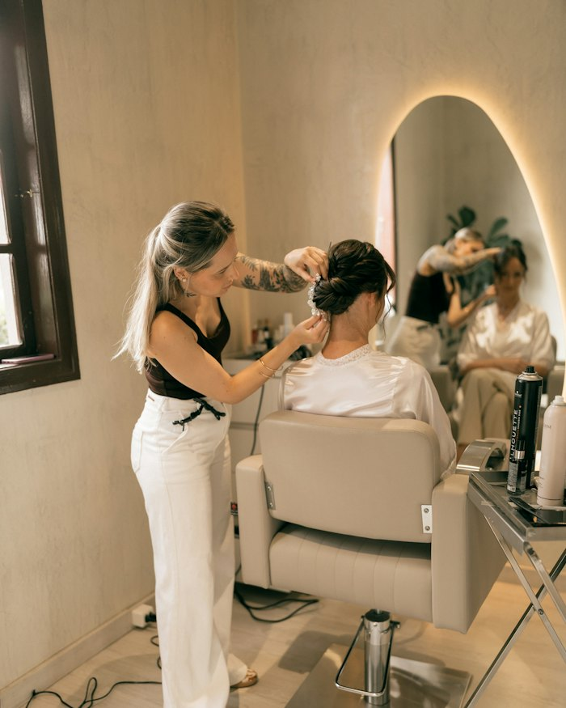
Location
Kozhikode, Kerala
Experience
4 years
Ananya creates soft, luminous bridal looks and bold runway faces, and has worked backstage at IDFR shows since Season 2. She is known for long-wear makeup that stays camera-ready from the first ritual to the last dance.
Bridal makeup
Engagement makeup
Fashion-show makeup
Editorial makeup
Party makeup
Diya Thomas
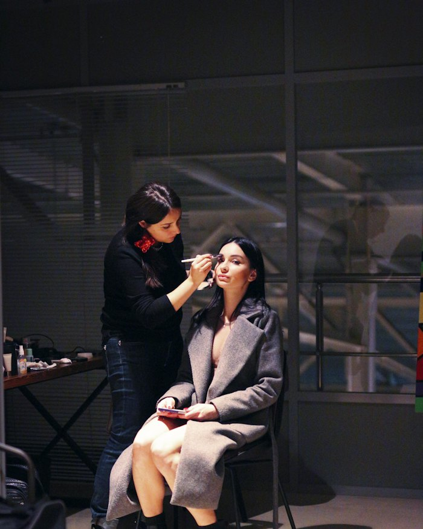
Location
Kochi, Kerala
Experience
6 years
Diya specialises in high-definition makeup for film, print and live events. She leads the backstage beauty team on IDFR show nights, keeping dozens of looks consistent under bright runway lights.
HD bridal makeup
Runway and backstage makeup
Film and TV makeup
Airbrush makeup
Pre-wedding shoot makeup
Meera Nair
Location
Kannur, Kerala
Experience
3 years
Meera blends traditional Kerala bridal styles with contemporary techniques, keeping skin fresh and natural even in coastal humidity. Her calm, unhurried approach puts brides at ease.
Kerala bridal makeup
Reception makeup
Natural and no-makeup looks
Saree draping
Bridesmaid makeup
Fathima Rahman
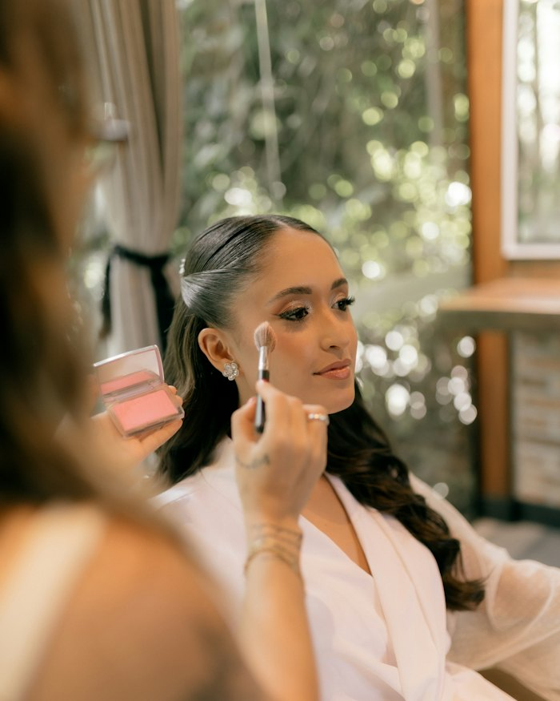
Location
Kasaragod, Kerala
Experience
5 years
Fathima specialises in bridal makeup and hijab-friendly styling. Her detail-driven work and steady hand make her a favourite for busy wedding mornings with large bridal parties.
Bridal makeup
Hijab styling
Nikah and reception looks
Engagement makeup
Family and guest makeup
Neha Joseph
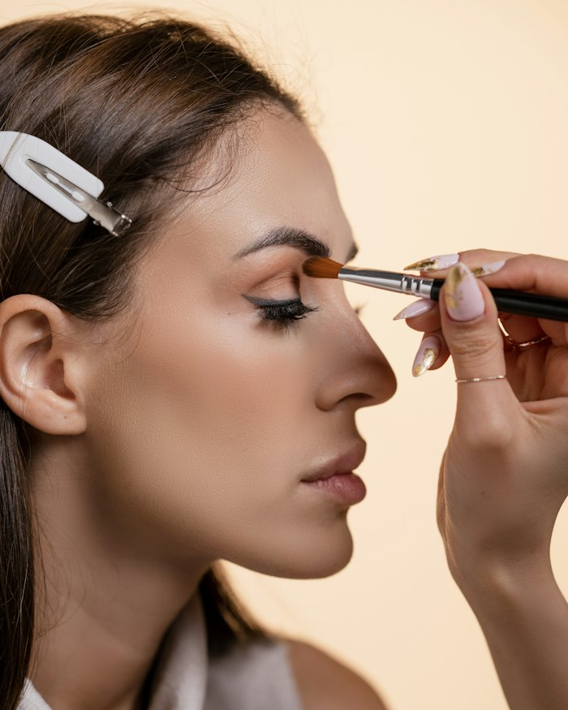
Location
Thrissur, Kerala
Experience
2 years
An emerging artist from the IDFR network, Neha brings colour-led, editorial creativity to fashion shoots, festivals and themed events, and loves building a look around a single bold detail.
Editorial makeup
Creative and colour makeup
Festival looks
Photoshoot makeup
Party makeup
Riya Mathew
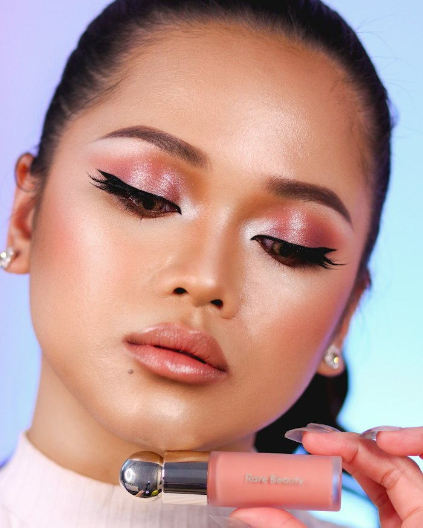
Location
Bengaluru, Karnataka
Experience
7 years
Riya works across Bengaluru and Kerala on commercial campaigns, celebrity events and luxury weddings. She also mentors new artists at IDFR beauty workshops.
Celebrity and event makeup
Commercial campaign makeup
Luxury bridal makeup
Airbrush makeup
Makeup workshops
Kavya Raj
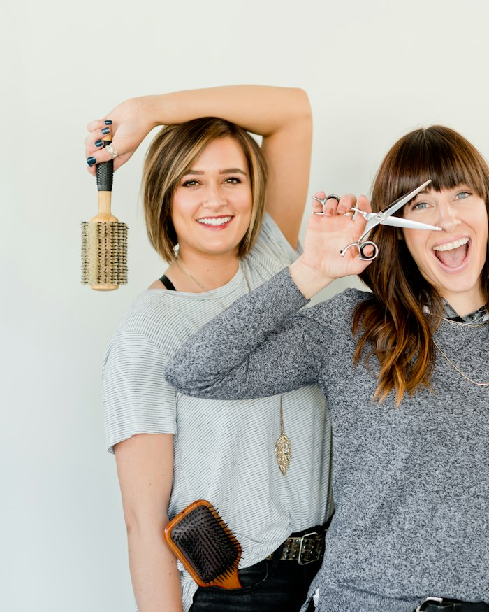
Location
Kochi, Kerala
Experience
5 years
Kavya designs hairstyles that move beautifully on the runway and hold through long bridal days, from sleek editorial looks to intricate updos finished with fresh flowers.
Bridal hairstyling
Editorial hairstyles
Fashion-show styling
Hair updos
Event hairstyling
Nisha Varghese
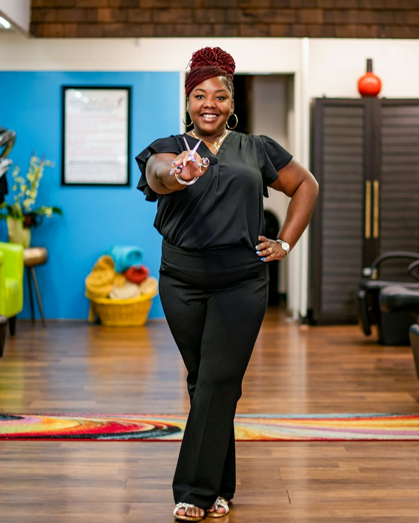
Location
Kozhikode, Kerala
Experience
8 years
A senior stylist and colour specialist, Nisha has styled models for three IDFR seasons and leads the show's backstage hair team, planning every look before the first model takes the stage.
Runway hairstyling
Hair colour consultation
Blow-dry and styling
Bridal hairstyling
Backstage team management
Sneha Das
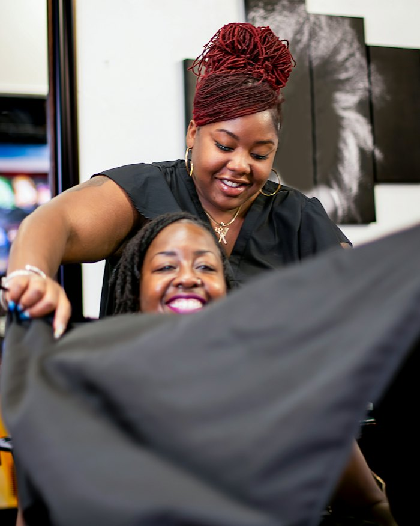
Location
Kannur, Kerala
Experience
3 years
Sneha specialises in traditional Kerala bridal hair, from jasmine-adorned braids to classic temple-style buns, and adapts each look to the bride's jewellery and saree.
Kerala bridal hairstyling
Jasmine and flower styling
Braids and buns
Engagement hairstyling
Hair accessory styling
Aiswarya Mohan
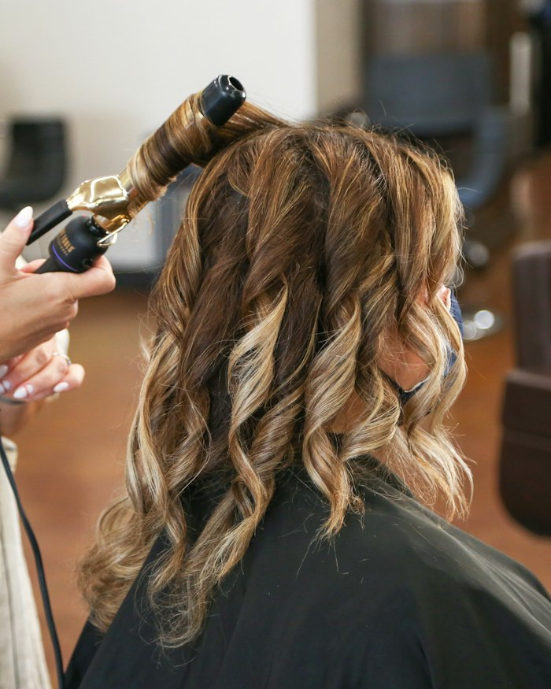
Location
Thrissur, Kerala
Experience
4 years
Aiswarya creates soft waves, textured braids and modern bridal styles, with a focus on healthy hair and a hold that lasts from the morning ceremony to the evening reception.
Bridal hairstyling
Curls and waves
Textured braids
Party hairstyling
Pre-event hair care
Maria George
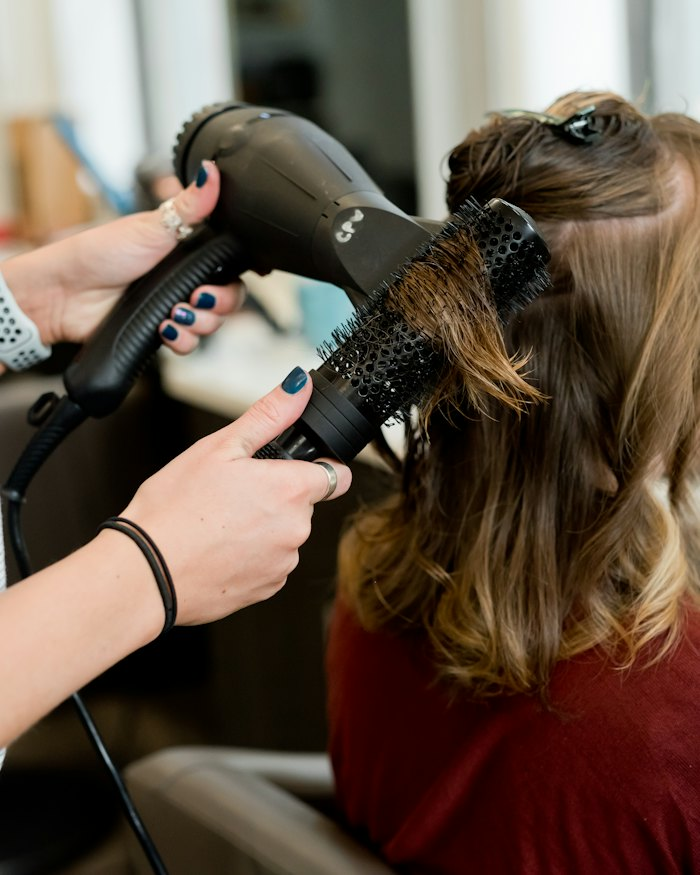
Location
Kasaragod, Kerala
Experience
6 years
Maria works on editorial shoots and fashion films, shaping hair for camera, wind and studio lights with a quick, calm touch on set.
Editorial hairstyling
Photoshoot and film styling
Hair extension styling
Sleek and glam looks
Event hairstyling
Devika Suresh
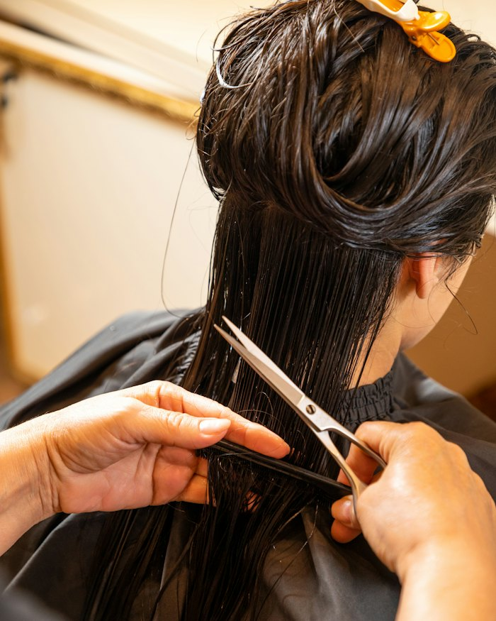
Location
Bengaluru, Karnataka
Experience
2 years
Devika is a fresh voice in the IDFR network, known for playful updos, accessorised looks and fast, tidy quick changes backstage.
Updos and buns
Accessorised hairstyles
Backstage quick changes
Party hairstyling
Bridesmaid hairstyling
Arjun Das
Location
Kochi, Kerala
Experience
8 years
Arjun leads wedding and destination shoots for ASDreams Studio, capturing candid emotion in natural light, from Kerala's backwaters to windswept coastlines.
Wedding photography
Destination shoots
Pre-wedding shoots
Portrait sessions
Album design
Portrait session
Beach wedding
Destination shoot
Nikhil Varma
Location
Kozhikode, Kerala
Experience
5 years
Nikhil photographs fashion editorials and model portfolios, and shoots the IDFR runway from the photographers' pit every season.
Fashion and editorial photography
Model portfolios
Runway photography
Couple shoots
Lookbook photography
Model portfolio
Engagement shoot
Pre-wedding shoot
Rahul Menon
Location
Kannur, Kerala
Experience
6 years
Rahul's warm, documentary-style coverage tells the full story of a wedding day, from quiet moments with family to the energy of the reception.
Candid wedding photography
Engagement shoots
Portrait photography
Family sessions
Photo editing and retouching
Portrait session
Candid wedding
Engagement details
Akhil Joseph
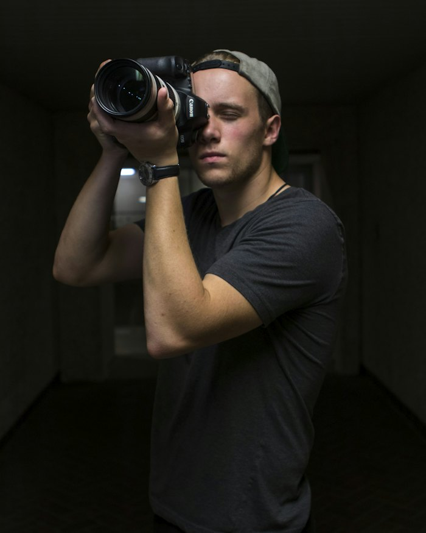
Location
Thrissur, Kerala
Experience
4 years
Akhil loves big landscapes and bold light, pairing couples and models with dramatic locations for travel, outdoor and destination stories.
Destination and travel shoots
Outdoor portraits
Wedding photography
Drone photography
Pre-wedding shoots
Outdoor portrait
Wedding celebration
Travel shoot
Vivek Nair
Location
Bengaluru, Karnataka
Experience
7 years
Vivek brings a studio photographer's eye for detail to portraits, jewellery and wedding details, with clean lighting and carefully styled frames.
Studio portraits
Product and jewellery photography
Wedding detail shots
Commercial photography
Professional headshots
Studio portrait
Wedding details
Jewellery detail
Adithya Raj
Location
Kasaragod, Kerala
Experience
3 years
Adithya covers concerts, festivals and celebrations, moving quickly through crowds to catch the moments that define an event.
Event photography
Concert and stage photography
Wedding photography
Corporate events
Same-day highlights
Concert coverage
Wedding coverage
Evening location shoot
Kevin Thomas
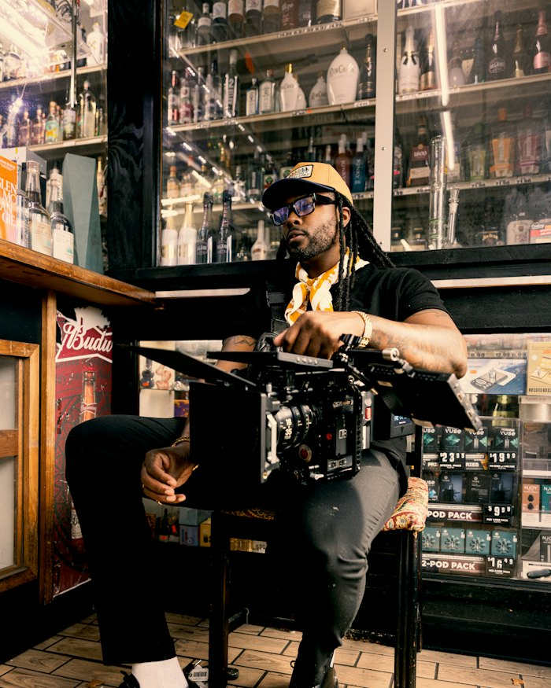
Location
Kochi, Kerala
Experience
7 years
Kevin directs and shoots cinematic wedding films and fashion features for ASDreams Studio, with an eye for movement, music and colour.
Cinematic wedding films
Fashion films
Highlight reels
Colour grading
Drone videography
Behind the scenes
Wedding film still
Fashion film edit
Alan Mathew
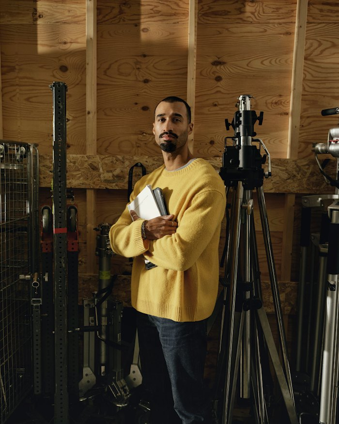
Location
Kozhikode, Kerala
Experience
5 years
Alan produces brand films, interviews and corporate videos, turning a client's message into a clear story with clean sound and steady visuals.
Brand and promotional videos
Interviews and documentaries
Corporate event coverage
Script and storyboard support
Video editing
Interview set-up
Corporate event film
Brand film screening
Rohit Krishna
Location
Kannur, Kerala
Experience
4 years
Rohit films concerts, fashion shows and live events with multi-camera set-ups, and has covered the IDFR runway for the last two seasons.
Fashion-show coverage
Live event filming
Multi-camera production
Behind-the-scenes films
Social media reels
Live concert coverage
Event highlight film
Live show
Basil George
Location
Thrissur, Kerala
Experience
6 years
Basil's wedding cinematography is gentle and story-led, built around vows, speeches and the small moments families want to watch again and again.
Wedding cinematography
Pre-wedding films
Engagement films
Documentary edits
Same-day edits
Behind the scenes
Wedding film still
Ceremony film still
Jithin Raj
Location
Bengaluru, Karnataka
Experience
3 years
Jithin creates fast-paced reels and behind-the-scenes content for brands, models and events, shooting light and handheld so nothing slows the day down.
Instagram and YouTube reels
Behind-the-scenes content
Event highlight films
Gimbal and handheld filming
Short-form editing
Event reel
Social media reel
Event highlights
Sreehari Das
Location
Kasaragod, Kerala
Experience
8 years
Sreehari is ASDreams Studio's senior editor and colourist, shaping raw footage into polished films with careful pacing, sound and grade.
Video editing
Colour grading
Sound design and mixing
Wedding films
Promotional videos
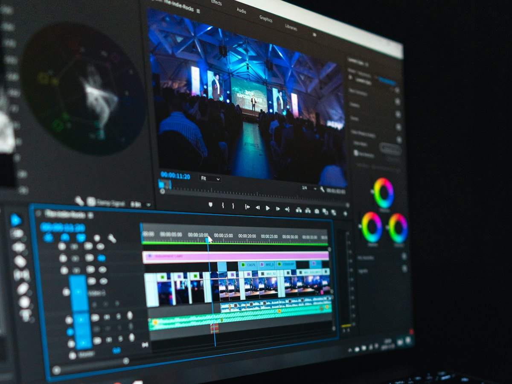
Editing suite
Promo shoot
Wedding film still
Tara Nair
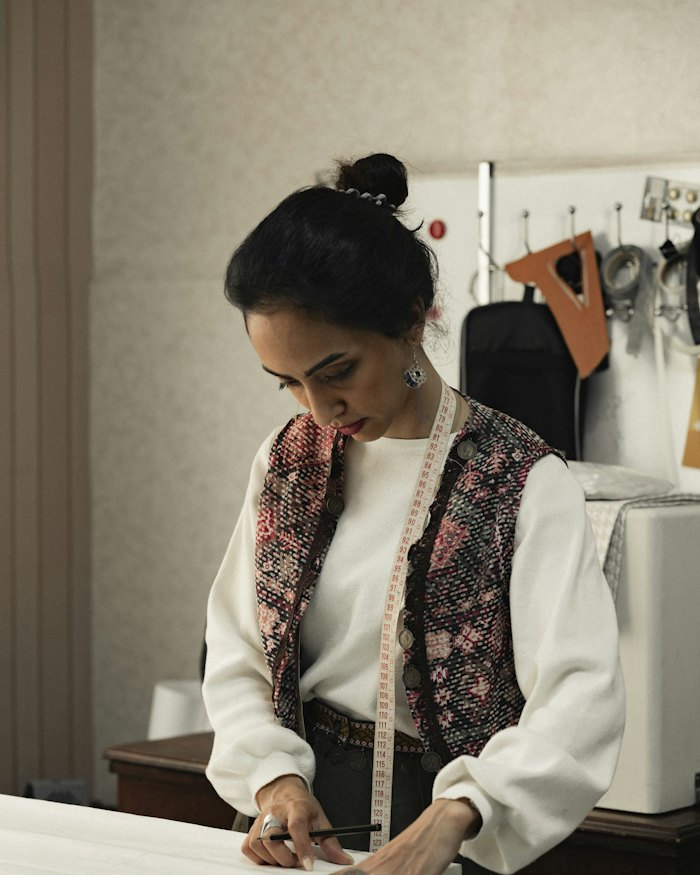
Location
Kochi, Kerala
Experience
6 years
Tara designs contemporary womenswear rooted in Kerala handloom, and has shown three collections on the IDFR runway.
Bridal and occasion wear
Custom couture
Handloom collections
Styling consultations
Runway collections
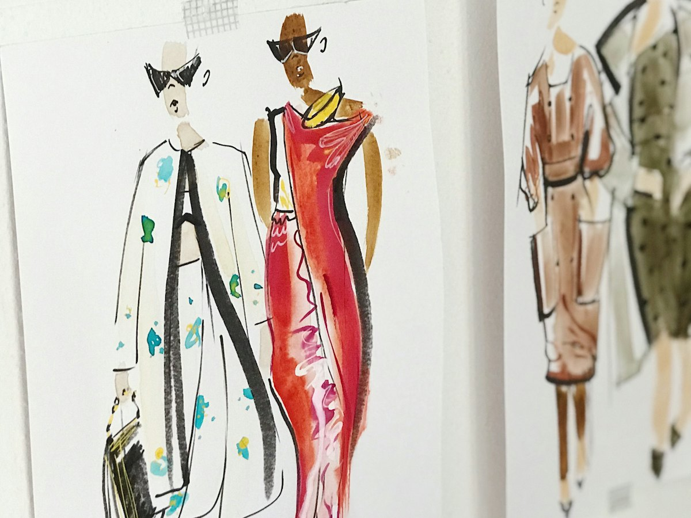
Collection sketches
Summer collection
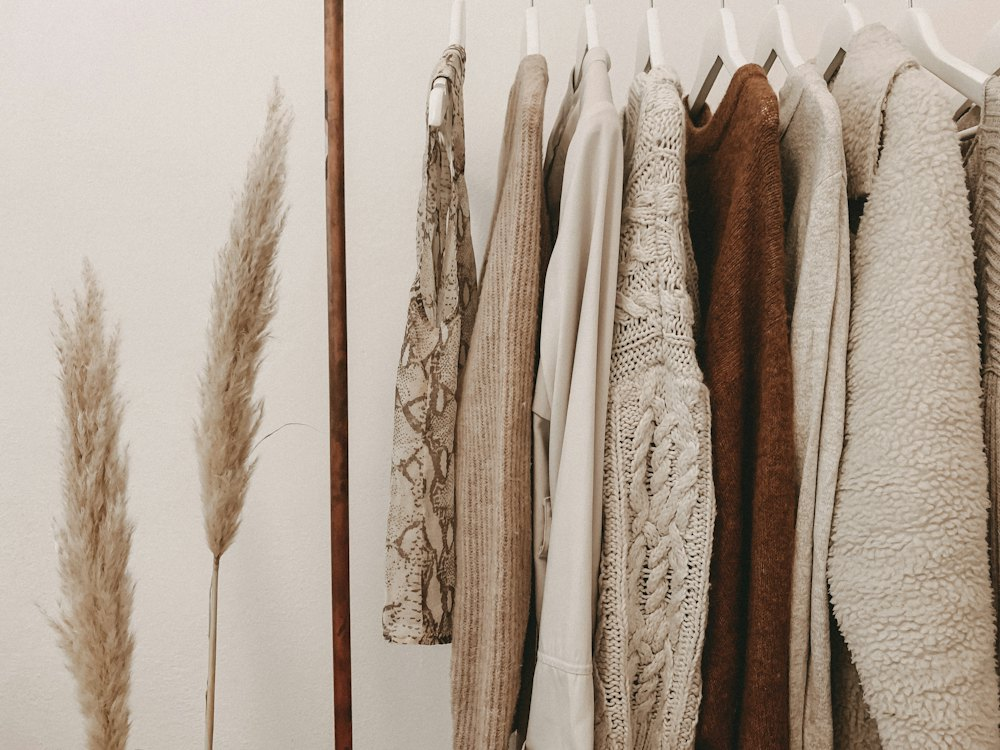
Handloom capsule
Isha Menon
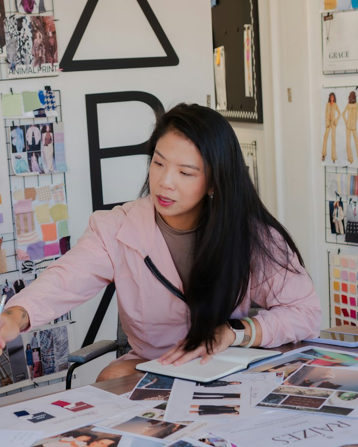
Location
Kozhikode, Kerala
Experience
4 years
Isha creates evening gowns and reception wear with rich colour and hand embellishment, working closely with each client through every fitting.
Evening gowns
Reception and party wear
Custom fittings
Embellishment design
Fabric sourcing
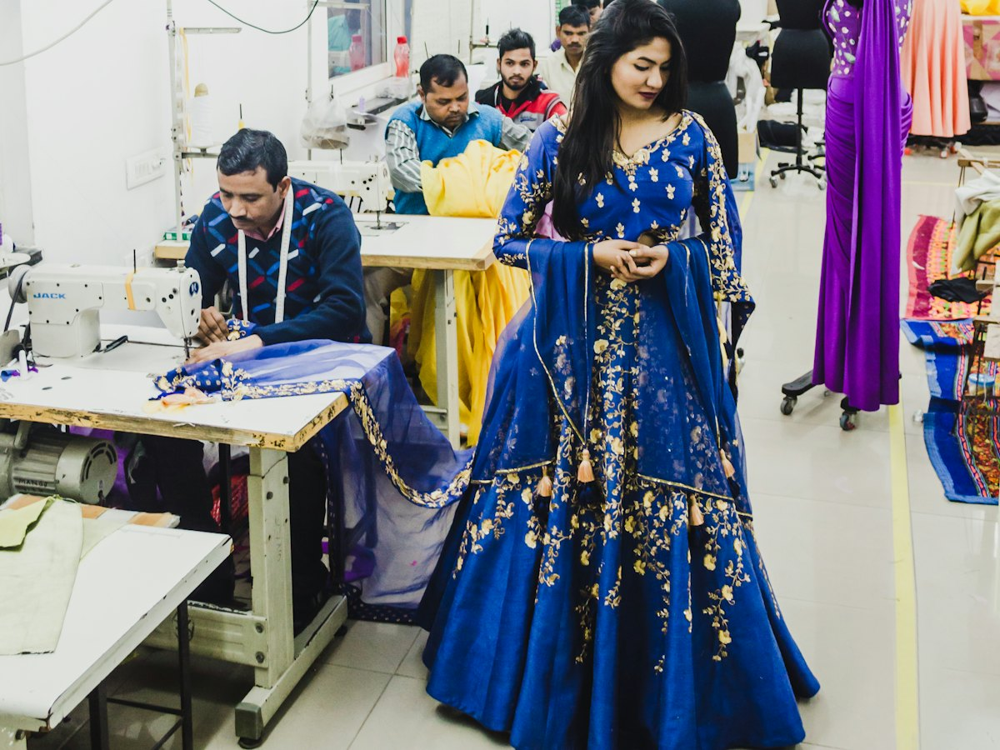
Reception gown
Evening wear
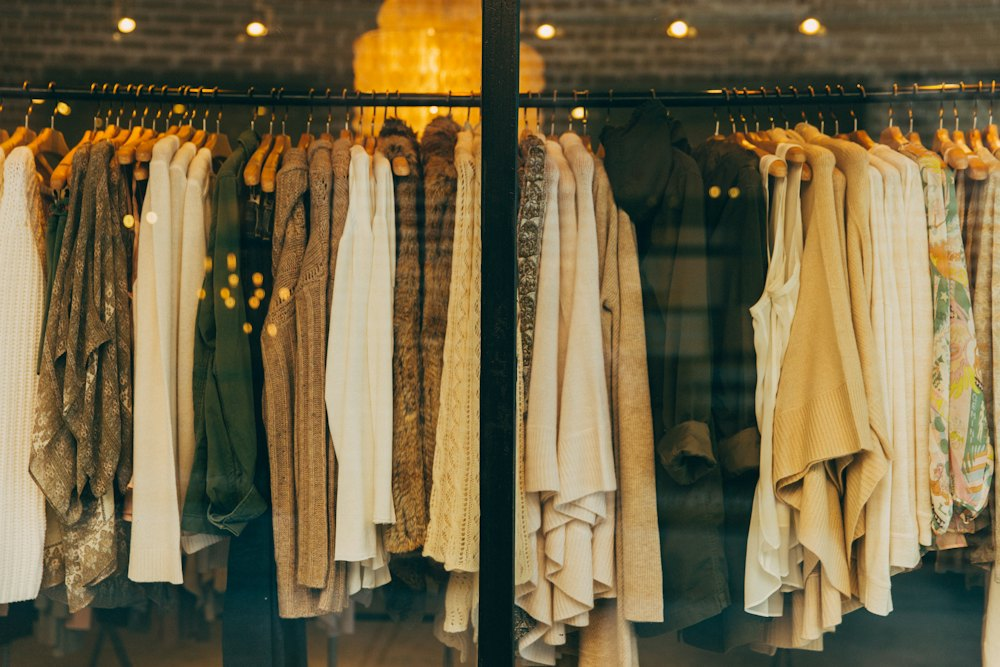
Boutique collection
Diya Varma
Location
Bengaluru, Karnataka
Experience
5 years
Diya's label blends minimal tailoring with sustainable fabrics, creating versatile ready-to-wear pieces designed to be worn for years.
Sustainable fashion design
Ready-to-wear collections
Pattern making
Capsule wardrobes
Brand collaborations
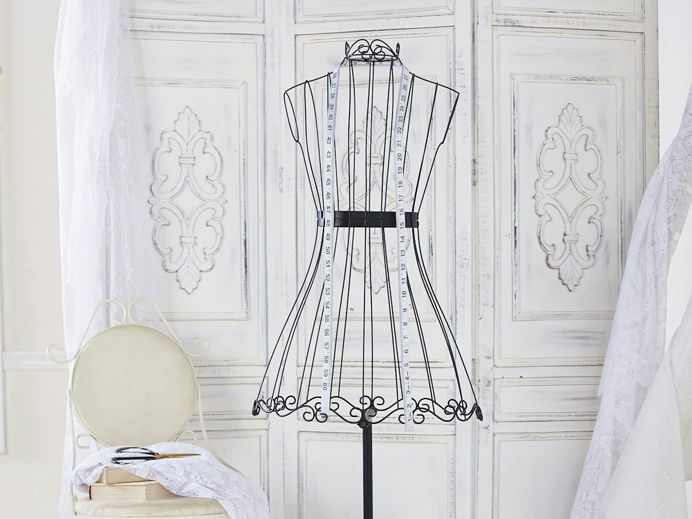
Pattern development
Resort collection
Ready-to-wear line
Anjali Thomas
Location
Thrissur, Kerala
Experience
3 years
Anjali designs relaxed occasion wear and outerwear, mixing soft colour with structured coats and jackets for every season.
Occasion wear
Outerwear and jackets
Made-to-measure garments
Fashion illustration
Wardrobe styling
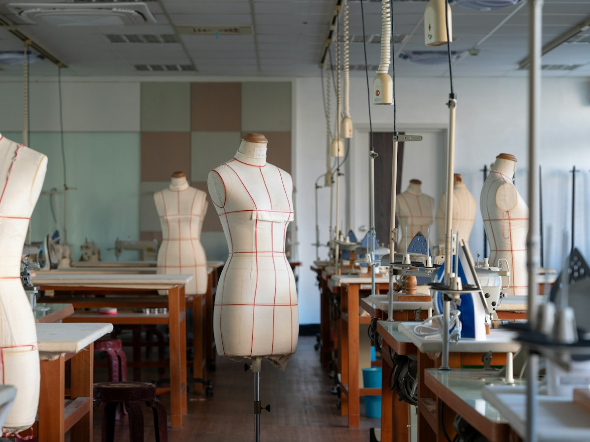
Studio fittings
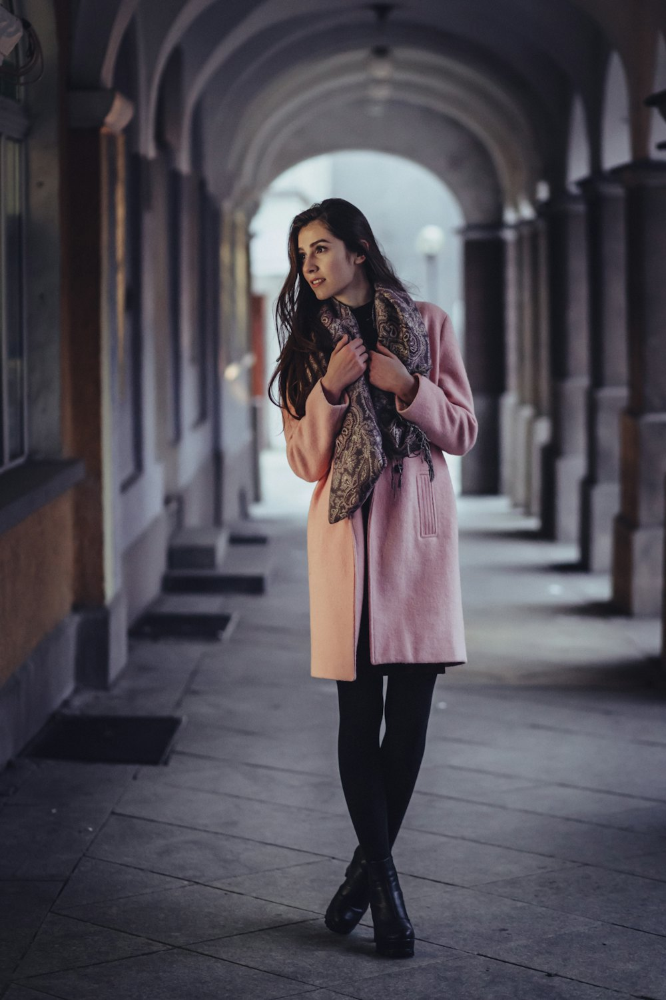
Outerwear collection
Autumn collection
Maya Joseph
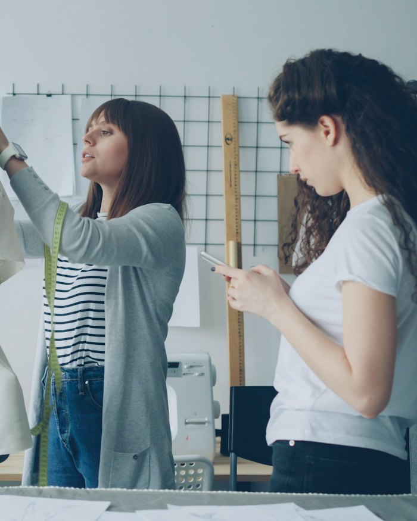
Location
Kannur, Kerala
Experience
7 years
Maya is known for sharp tailoring and statement outerwear, cutting suits, blazers and coats that are made to measure for every client.
Tailored suits and blazers
Statement outerwear
Wedding suits
Alterations and fittings
Corporate uniforms
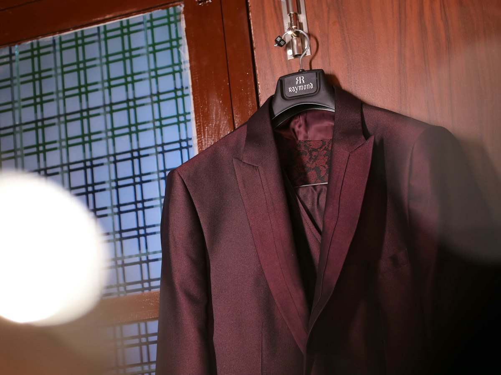
Tailored blazer
Statement coat
Street tailoring
Neha Raj
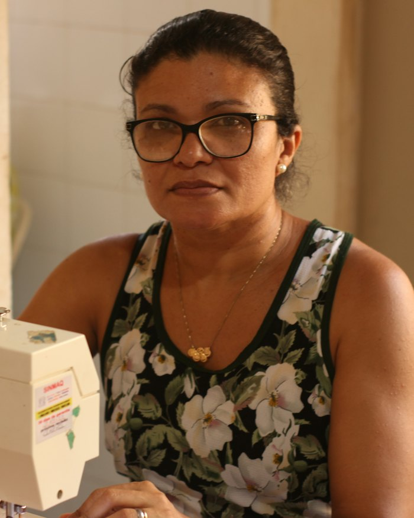
Location
Kasaragod, Kerala
Experience
2 years
A finalist in the IDFR new-designer showcase, Neha creates fluid, movement-led pieces that come alive on the runway.
Runway and concept collections
Fluid occasion wear
Sketch-to-sample design
Custom outfits
Fashion-show styling
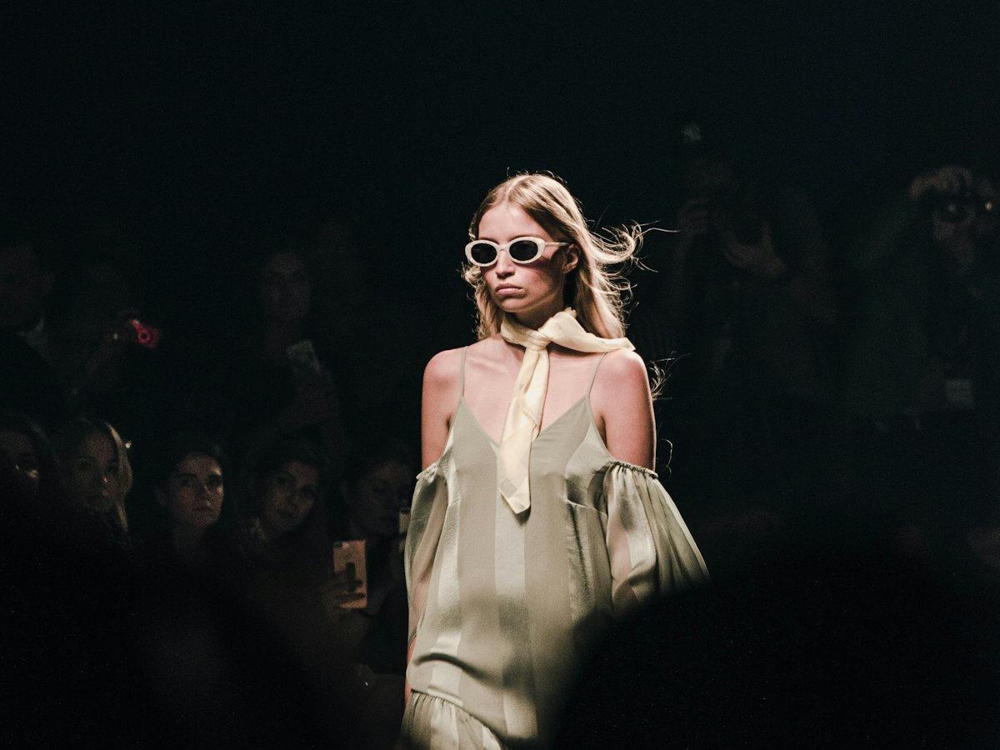
Runway debut
Concept piece
Fluid knitwear
Arjun Menon
Location
Kochi, Kerala
Experience
6 years
Arjun flies cinematic aerials for destination weddings and brand films, mapping safe flight paths and capturing sweeping Kerala coastlines from above.
Aerial wedding films
Destination drone coverage
Real-estate flyovers
FPV accent shots
DGCA-compliant operations
Coastal flyover
Hill-station aerial
Above the clouds
Nikhil George
Location
Kozhikode, Kerala
Experience
4 years
Nikhil specialises in live-event aerials and fashion-show exteriors, coordinating with ground crews so the drone never interrupts the schedule.
Live event aerials
Fashion-show exteriors
Multi-battery coverage
Same-day aerial edits
Safety briefings
Town overview
Festival aerial still
Beach survey
Rahul Das
Location
Thrissur, Kerala
Experience
5 years
Rahul pairs stills and motion from the air, delivering both high-resolution photos and smooth cinematic moves for hotels, resorts and campaigns.
Aerial photography
Cinematic drone video
Resort and hotel films
Mapping and site surveys
Twilight golden-hour flights
Dusk flyover
Venue aerial
Cityscape pass
Vivek Thomas
Location
Bengaluru, Karnataka
Experience
3 years
Vivek focuses on precise, low-altitude product and jewellery set-ups outdoors, plus gentle reveal shots for luxury brands and private estates.
Low-altitude product reveals
Estate and villa tours
Brand campaign aerials
Night-light drone work
Insured commercial flights
Cliffside reveal
Lifestyle aerial still
Production day
Kevin Nair
Location
Kochi, Kerala
Experience
7 years
Kevin cuts cinematic wedding films and fashion features, shaping colour, pacing and sound so every story feels intentional from the first frame.
Wedding film editing
Fashion-film edits
Colour grading
Sound design
Highlight reels
Editing suite
Timeline polish
Wedding film still
Sreehari Menon
Location
Kasaragod, Kerala
Experience
8 years
Sreehari is a senior colourist and photo retoucher, balancing skin tones, product detail and cinematic grades for ASDreams Studio campaigns.
Photo retouching
Colour grading
Batch culling and selects
Look development
Delivery for print and web
Grade review
Retouched portrait
Client review
Alan Raj
Location
Kozhikode, Kerala
Experience
5 years
Alan turns brand interviews and corporate coverage into clear, paced films with clean titles, captions and social cut-downs.
Corporate video edits
Interview assembly
Social media cut-downs
Subtitles and captions
Motion titles
Interview edit
Corporate cut
Promo still
Jithin Das
Location
Bengaluru, Karnataka
Experience
3 years
Jithin specialises in fast turnaround reels and photo sets for models and events, keeping a scroll-stopping pace without losing clarity.
Reels and short-form edits
Event highlight films
Photo set grading
Beat-synced cuts
Same-day delivery
Social reel
Event highlight
Live cut
Tara Joseph
Location
Kochi, Kerala
Experience
6 years
Tara designs contemporary bridal jewellery rooted in South Indian craft, pairing heirloom motifs with lighter everyday wear for the IDFR runway.
Bridal jewellery sets
Custom engagement rings
Temple-inspired pieces
Runway accessories
Restyling family gold
Collection sketches
Studio lookbook
Boutique display
Isha Das
Location
Kozhikode, Kerala
Experience
4 years
Isha creates statement neckpieces and ear cuffs with rich colour stones, working through fittings so every piece sits perfectly for camera and stage.
Statement neckpieces
Ear cuffs and climbers
Occasion wear sets
Stone setting
Show styling
Runway styling
Editorial set
Lookbook still
Diya Nair
Location
Bengaluru, Karnataka
Experience
5 years
Diya's minimal jewellery line focuses on clean geometry in gold and silver, designed to layer with tailored ready-to-wear and bridal looks.
Minimal daily wear
Stackable rings
Silver and gold layers
Capsule collections
Brand collaborations
Form studies
Resort lookbook
Capsule line
Anjali Menon
Location
Thrissur, Kerala
Experience
3 years
Anjali crafts playful occasion jewellery and hair ornaments for fashion shows, mixing soft colour with structured metal forms.
Hair ornaments
Occasion jewellery
Made-to-order pieces
Illustration to prototype
Show accessories
Studio fittings
Editorial styling
Runway accessory
IDFR Fashion Show
Season 4
Three runway nights celebrating emerging designers, established names
and the next generation of Indian modelling talent. Season 4 brings
couture, resort, menswear and handloom collections to one stage in
Kozhikode.
Dates
18 – 20 Dec 2026
Venue
IDFR Fashion House
Designers
24 Labels
Models
60+ Walking
01
18 December · 7:00 PM
Night One — New Faces
Debut collections walked by models from the Season 4 open auditions.
02
19 December · 7:00 PM
Night Two — Heritage & Handloom
Kerala handloom, Kanjeevaram and heritage textiles reimagined for
today.
03
20 December · 7:30 PM
Night Three — The Grand Finale
Couture showcases, awards and the closing walk of Season 4.
A finishing school for models — from first walk to first casting. Small
batches, working industry mentors and a direct pathway to IDFR runways
and ASDreamStudio portfolio shoots.
Batches
Weekend & Evening
Mentors
Runway & Casting
Next Intake
19 Jan 2027
01
10 Weeks · Beginners
Model Training
Runway walk, posture, turns, posing and camera confidence.
02
6 Weeks · All levels
Grooming & Etiquette
Skincare, fitness, wardrobe, communication and interview skills.
03
1 Day · With ASDreamStudio
Portfolio Shoot
Studio and outdoor looks, retouched and ready for agencies.
04
Ongoing
Casting & Industry Opportunities
Audition preparation, casting calls and placement with IDFR
partners.
Beauty & Styling
Lakme Academy
Industry-led beauty and styling courses for aspiring makeup artists,
hair stylists and fashion stylists — with live backstage experience at
IDFR fashion shows.
Format
Classroom + Backstage
Certification
Professional
Next Intake
12 Jan 2027
01
16 Weeks
Professional Makeup Artistry
Bridal, editorial, runway and camera makeup techniques.
02
12 Weeks
Hair Styling & Design
Cutting, colour theory, runway hair and bridal styling.
03
8 Weeks
Fashion Styling
Wardrobe styling for shoots, campaigns and runway shows.
04
6 Weeks
Skin & Beauty Essentials
Skincare science, consultation and beauty treatments.
Legal
Privacy Policy
Information we collect
When you create an IDFR profile we collect the details you provide —
such as your name, contact information, measurements and portfolio
images — to present your profile to verified casting recruiters.
How we use it
Your information is used to match you with relevant assignments,
communicate about fashion shows and improve our platform. We never
sell personal data to third parties.
Your choices
You can edit, hide or delete your profile at any time from your
account settings, or by writing to info@idfr.example.
Legal
Terms & Conditions
Using IDFR
IDFR is a marketplace that connects models with casting recruiters,
brands and fashion shows. Members agree to provide accurate
information and to conduct themselves professionally.
Profiles & content
Models retain ownership of their portfolio images and grant IDFR
permission to display them on the platform for the purpose of
discovery and casting.
Assignments
Assignments are agreed directly between models and recruiters. IDFR
verifies recruiters but is not party to individual contracts.